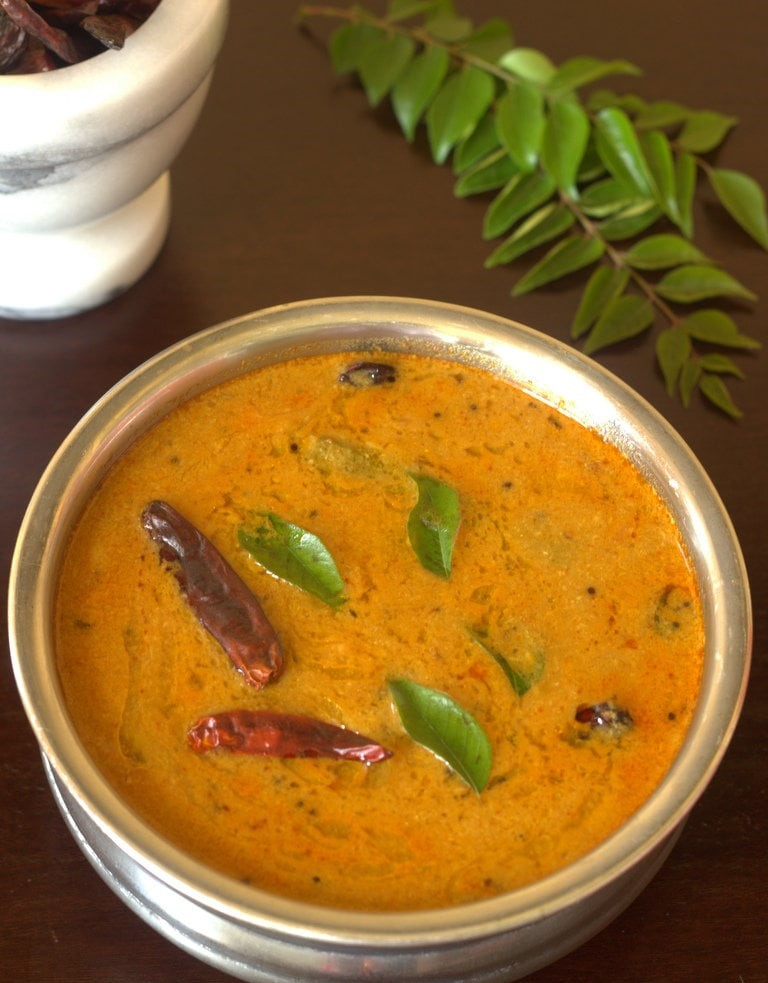

Sambhar

Description
Sambhar is a flavorful and tangy lentil-based soup with a mix of vegetables.
It is seasoned with a unique blend of spices and tamarind pulp, giving it a distinctive South Indian taste.
Sambhar is often enjoyed with rice, idli, dosa, or vada, and it complements these dishes with its rich and comforting flavor.
Ingredients
- Toor dal (1/2 cup)
- Vegetables (drumsticks, carrots, beans)
- Tamarind pulp (1 tbsp)
Steps
- Cook toor dal with vegetables until soft.
- In a separate pan, add tamarind pulp, sambar powder, and salt.
- Mix in cooked dal and vegetables, simmer.
- In a tadka pan, heat oil, add mustard seeds, fenugreek, and curry leaves.
- Pour tadka over sambhar and serve hot with rice or idli.